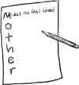

A Cross to Bear
It was a beautiful morning the Friday before Easter. Birds sang from the trees and tulips glowed in the sunny flowerbeds, but Daniel didn’t notice any of it. He walked slowly down the street with a frown on his face. It isn’t fair at all, he thought, as he made a fist around a ten-dollar bill. I think Alley doesn’t like me and just wanted to get me in trouble. I would never let her goat out, even if I did go see it. And I didn’t!
“Daniel! Wait, an’ I’ll come with you!” He turned to see his younger sister Rosie running after him. Her braids were flying and she looked out of breath.
“You didn’t have to come,” Daniel said glumly.
“But I—I wanted to,” she said. “Really, Daniel, I didn’t know they were going to be mad at you. I just said that I remembered that you said—”
“I know,” Daniel cut in. “And I did say that I wanted to see their new goat last week when you told me about it. It’s just hard that Alley went and blamed it on me, because her silly goat got out and ate something poisonous.”
“Will it die?” Rosie asked, with a worried look on her face.
“Probably not. Mom said that they got it to the vet in time. But they were sure mad about it and said I had to pay for it. Why do they blame it on me?” Rosie didn’t answer and they walked along without saying anything. At the corner they turned down a gravel road.
As they neared the hedge of rhododendron in front of Alley Smith’s house, Daniel slowed his steps. He hadn’t been here yesterday when the little pygmy goat got out. He hadn’t been on this road since—since the day when he had gone bike riding with Chad. That had been a month ago. How could Alley say that she had seen him? But Mom had said he better pay the ten dollars, even if it wasn’t his fault.
“Daniel?” Rosie almost whispered the word. She stood still and looked down the road with a sad look on her little face.
“What?”
“Do you think we should pray? Maybe God will make them sorry….” Her voice trailed off, and Daniel followed her gaze to a church building standing by the side of the road. It had a big poster up with a picture of a cross covered with flowers.
Daniel thought about the Bible story they had read that morning. It was on a Friday that Jesus had died on the cross. First he had been accused and beaten, and then they had put the boards of the cross on his back and made him carry them up a hill. It had all been very unfair and cruel, but Jesus had said, “Father, forgive them; for they know not what they do.”
“I think, Rosie,” Daniel said slowly, “that maybe I should pray to be cheerful. You know, Jesus didn’t complain when people told lies about Him and treated Him badly.”
“No, Jesus just loved them anyway. I guess that was kind of hard when they were so mean.” Rosie looked over at the Smith’s house. “Do you want me to pray for you?”
“I guess so.”
Rosie shut her eyes. “Dear Father, help Daniel to be cheerful and nice,” she said, “even though Alley doesn’t like him and blamed him for her goat getting out. Thank you that Jesus died for us on the cross and loved us, even though people were mean to Him. In Jesus’ name, amen.”
“Thanks,” Daniel said, and turned down the walk. Rosie followed him up to the front door. Daniel knocked.
The door swung open and Mrs. Smith looked down at them. “Oh, it is you,” she said with a frown. “Alley’s out with the goat and it is still terribly sick. It really could have died with all the rhodies it ate up last night. Ruined them totally and they’ll cost me a great deal to replace.”
“I brought the ten dollars,” Daniel said as she paused. He held out the money.
“Oh, well, that might help a little. But I guess a little boy can’t be expected to do better,” she said as she slipped it into her pocket.
It felt sort of like a slap in the face, but Daniel bit his lip and didn’t say a word. Rosie squeezed his arm. “If you wouldn’t mind, Mrs. Smith, we would like to see the goat,” she said. “We’re sorry it got sick.”
“Are you now?” The lady in the doorway looked at them sternly. At last she led the way into the garage. Alley was sitting on an old pillow with her arm around a little gray goat. She frowned when they came in. The pygmy goat gave a squeaky little baa.
“Daisy is eating her hay now,” Alley said to her mom.
“Good, Deary. I’m sure she’ll be quite well soon,” Mrs. Smith said in a sweet voice. “But Rosie’s brother thought he would come and apologize for all the trouble he gave you.”
Her smile made Daniel’s stomach feel funny. He swallowed and looked at Alley. What could he say? Father, forgive them…Father, forgive them… the words went through his thoughts. He looked at the little goat and said slowly, “I am sorry that your goat got out and got sick, Alley. I wouldn’t—” he stopped. They would never believe that he wasn’t to blame. Daniel reached out and stroked the little goat’s back. “I hope she’ll get better really soon.”
As Daniel and Rosie walked quietly back home, the flowers swayed in the sunshine and birds sang along the road. Daniel saw and heard, but he didn’t say anything. There were bigger thoughts in his mind. Bigger than being blamed or losing ten dollars. Bigger than the Smiths and their false ideas about him. No, it was thoughts about Jesus, who had traveled a road of sorrow and trouble before him, that filled his mind. Yes, for Jesus sake, he would help carry that cross that was so heavy and hard. It was these thoughts that filled his heart with gladness!

Our Example
You know what an example is, don’t you? When there are new or hard things to do, you want someone to show you how. If you are learning cursive, you need an example of the letter to copy. An example is something for us to follow so we know what to do.
Jesus is an example for us to follow. Do you know Jesus? You read stories about His life and how He loves us. You might want to please Him and try to do what the Bible says. Did you ever think about being like Him? When you really like someone, it is easy to want to copy them. When you notice how well your big brother can fix something, or how Mom can cook so well, you want to copy them. But how about being like Jesus?
First you want to know what Jesus is like. When you read the story about Him blessing the children, you can see that He was loving and patient. Do you want to be like that? Do you want to be a kind friend to the younger children? You can be a blessing, and show them that you care for them. When Jesus washed His disciples feet, He said that they should copy Him. He was showing an example of how they should serve each other. Is there a little undesirable job that you can do? Maybe it is scrubbing the floor or taking out the trash. How would Jesus do it, if He were you?
Sometimes it is hard to do the right thing. Even though Jesus had a pure heart, He had to do hard things. How did Jesus always do what was right? He took time to pray and ask His Father to help Him. Jesus obeyed God and did what God wanted. Even when it was hard, like being quiet when others told lies about Him. God can help you, too. He can help you live so that others will want to copy you. You can be an example.
Smoke and Sluggards
Have you ever roasted marshmallows over a campfire? Maybe you can remember trying to get away from the smoke. A campfire is fun, but smoke in your eyes is not! It stings and blinds you so that you can not see anything. “Oooh, get that smoke away!” you say as you dodge aside. “My eyes hurt and I can’t see!” After that you keep far away from the blowing smoke. You can’t do anything when it comes your way. It is plainly a troublesome bother.
Did you know that there is a verse in the Bible about smoke in your eyes? It says “as smoke to the eyes, so is the sluggard to them that send him.” A sluggard is someone who fools around and doesn’t get their work done. When Mom tells you to take out the trash or clear off the table, do you drag your feet and hope someone else will do it? Can you be counted on to get your jobs done every day? Or are you a sluggard who finds excuses to get out of work?
A sluggard is a real pain. They get in the way and we can’t get our work done. We can’t count on someone who is lazy, can we? They always have to be reminded and made to do their work. Instead of thinking how they can help, a sluggard just thinks of ways to get out of work. I hope you don’t want to be a sluggard!
“I don’t like it at Joanna’s house,” Alice said, flopping down next to Grandpa with a sigh. “She wanted to play Barbie dolls, and I wouldn’t, and she got mad because I didn’t want to look at her magazines. They were all about fashion and stuff. I was so glad when we could leave!”
“Those are Joanna’s idols, dear,” Grandpa said. “It can be hard to stand for what is right in such places, but maybe you’d like to hear a true story about
Three Men Who Stood
(Reference: Daniel 3.)
It was a big day in the land of Babylon. The great king Nebuchadnezzar had called together all the rulers and government officials to the erection of his great golden statue. A trumpet was blown and the crowds hushed to hear the announcement: “Listen all nations and peoples, for when you hear the music begin, you must fall down and worship the king’s golden image. Those who don’t shall be cast into a fiery furnace.”
In the wave of bowing forms that followed the music, someone noticed three men who stood toward the back of the crowd. Stood, mind you. It was three Jewish officials who would not respect the king or his gods. Wouldn’t the great Nebuchadnezzar be angry about this! In a moment they were summoned to him.
The three men could see that they were in trouble before the king even spoke. His eyes narrowed as he snapped, “So, is it true, O Shadrach, Meshach, and Abednego, that you do not serve my gods or worship the golden image which I have set up?” He leaned forward and glared at the three who seemed so indifferent. Did they not understand the power and might of their king?
“Now if you are ready to fall down and worship when you hear the music, it will be well,” Nebuchadnezzar continued with a grim smile. “But if not, you shall be cast at once into the burning furnace!”
“O Nebuchadnezzar, we are not afraid of what you can do.” The answer came back calm and unmoving. The startled king’s face turned red as the speaker boldly continued, “If we are cast into your furnace, our God whom we serve is able to deliver us out of your hand. But if He doesn’t, you should know that we will not serve your gods or worship the image which you set up.”
The king leaped to his feet in such a rage that he looked frightful. “Heat that furnace seven times hotter!” he roared. “Tell my mightiest men to bind these wretches at once. They shall be cast into the fire!” The mighty men came and Shadrach, Meshach, and Abednego were led to the scorching furnace and shoved in. But the heat was too much for even trained soldiers, and they fell dead at the entrance.
Nebuchadnezzar glared after them, and suddenly his eyes grew wide. “Didn’t we cast three men bound into the fire?” he asked, standing up. “True, O king,” his governors replied.
“But look! I see four men loose, and walking around in there.” His voice hushed. “The fourth one looks like a god.” Stepping nearer the entrance, the king called out, “Shadrach, Meshach, and Abednego, you servants of the most high God, come here!” And without any difficulty they did, unharmed and without smelling a bit like smoke. In amazement the haughty king blessed the God he had just defied.
“So,” said Grandpa, as he finished the story, “you can see that others have had to stand against pressures to do wrong, too. That is just one story, and it shows again how God is watching over those who serve Him.”
“I knew about Shadrach, Meshach, and Abednego, but I never really thought about how hot that furnace was,” said Alice. “I guess God just made it so they couldn’t feel it.”
“Yes, He surely showed His power on their behalf. I don’t think that it looked that way to start with, though.” Grandpa smiled at his granddaughter.
“It must have been scary,” said Alice, “but they didn’t act afraid. They just kept doing right no matter what would happen. Even though the king was so angry with them.”
“A bit like Joanna, right?” Grandpa said.
“Oh, it really wasn’t that bad. She didn’t have any fiery furnace to cast me in—just called me stupid and proud. It helped me to remember that Jesus was called names, too.”
“Yes,” said Grandpa, “He was with them in that fiery furnace, too, wasn’t He? I think that Shadrach, Meshach, and Abednego were happier walking around in the fire than they had been standing before the king’s image.”
Alice looked up with a happy smile. “I guess they were, weren’t they? I am glad that Jesus can be with me, too.”
Adapted from The King’s Daughter
The Old Brown House
The old, weather-beaten house stood quite a ways from the road. You might have supposed it was deserted, except for the thin column of smoke winding about the roof. And inside sat an old woman by the fire, looking absently from the window.
It was Aunt Ruth Jones, as the neighbors called her. Little was known about her, except that she was a queer old woman—a sort of hermit, living all alone. Some said that she was proud, and others said that her life had been one of disappointment. But she wouldn’t talk to any of them, and so the old brown house and its occupant were left to themselves.
The walls of the house were darkened with smoke, the windows dingy, and the floor sunken in. There was nothing cheery in the ill-kept room, or in the face of Aunt Ruth. She had become shriveled inside and shut off from everyone, with no one to share her joys or grief, or to care if she had any.
The days came and went. She did her little round of chores, a bit of patchwork, and occasionally walked to the village store. As she saw the glimpses of happy homes and heard the noisy stir of life, she felt the striking contrast to her own lonely lot. Gladly would she hasten back to her own silent fireside, where the cats, at least, were glad of her presence.

Though none shared her heart or home, yet there was sometimes one bright presence within those dim walls. A childish, questioning voice, and sweet laughter could be heard. It was Bessie Lane.
One June day, on her way to school, a sudden dash of rain had driven Bessie there for shelter. And ever since, the happy little girl, would go to the forsaken old house to chat with Aunt Ruth. As the springing step was heard, there would come a gleam of brightness to the faded eyes, and a smile to the thin mouth. And so Bessie was welcomed by the lonely heart.
“What in the world makes you visit that old hermit?” said Eliza Ray, her schoolmate, one morning. “Bridget, our hired girl, says she is an old hag.”
“Oh, but I like her,” said Bessie Lane, with a toss of her hat.
So Bessie kept up her visits, and the two would sit and talk together by the hour. Aunt Ruth would show her long-treasured trinkets, and detail their history, till Bessie’s eyes would widen in wonder.
On this wintry morning, as Aunt Ruth sat by the dull fire, Bessie had been away longer than usual. The sky was leaden, and the wind whistled down the chimney and shook the windows. Suddenly Aunt Ruth started up and peered through the window. There was the bright little hood and blue cloak approaching at last!
“Good morning, Aunt Ruth. It has been so long since I have been here, hasn’t it?”
“Yes, a long time for a lonesome old body like me; but this is no place for the young and happy, I know.”
“Oh, yes it is, dear Aunt Ruthie. I like to come real well. But Uncle Jake has been so sick. He sent for pa and ma, and I went with them. It is such a long way off, I thought we never would get there. And, oh, Aunt Ruth, I have not told you yet—” and the chubby face sobered.
“What is it, child?” Aunt Ruth asked, picking up the litter from off the floor. Somehow she always did try to clean up when Bessie was around. The room was good enough for her, but for the child it seemed dismal.

“Well, I will tell you: we are going to move away, Aunt Ruth. And I don’t want to go one bit,” said Bessie, tears rolling down her face.
“Going away? My little girl going off?” asked Aunt Ruth.
“Yes, and Mama said it would be too much bother to take Chip, so I have given poor birdie away to Eliza Ray,” said Bessie sadly. “I let Amy Wells have my kitten, but I haven’t found a place for my poor little rose.” She took a little pot from under her cape and held it up. “See, isn’t it a beauty? You will keep it to remember me by, and take care of it always, won’t you, Aunt Ruth?”
The little blossoms were out in full, and seemed to smile upon the old woman. “Yes, yes, child, I will keep your rose. No harm shall come to it.” Aunt Ruth looked at the rose thoughtfully. “So you are going away; and you’ll forget all about poor Aunt Ruth with so many new friends.”
“No, no, indeed I shall not,” said Bessie, giving her a hearty hug. “And sometime I will come to see you.” They talked a long time, but at last, with a good-by kiss to Aunt Ruth, and to the pet rose, she was gone like a flitting sunbeam.
The shadows seemed to come back to the old house, but as her glance fell upon the little flower, Aunt Ruth began clearing a place for it. “I used to carry just such roses to the old stone church in Amsden when I was no bigger than Bessie,” she said to herself. “It seems like yesterday, but, ah! it has been a long time. Maybe if I could do like that again, life would not be so dark and lonesome.”
She put the rose by the south window, so it could be seen from the gate. “Bless me!” Aunt Ruth said, looking at the window. “It never looked quite so dirty before.” With new energy, she cleansed, rinsed, and polished the glass. But when this was done, the old muslin curtain seemed dingier than usual. So it was taken down, and another finer one was unpacked from a drawer and put in its place.
The next morning, as Aunt Ruth ate her lonely breakfast, she placed her chair to face the window and the rose. The sun was shining, and as the rays streamed across the room to the opposite wall, she noticed the cobwebs. That day the cobwebs were swept down, the other window washed, and the floor cleaned. The old house had not been so neat and cheery for many years.
Near the close of the week she went to the village, this time putting on a dark delaine, instead of the old calico. Somehow the gay dresses and curious glances did not disturb her as much as usual. She spoke pleasantly with a neighbor whom she had not talked with for a year.
A strange feeling had come over her—a feeling that she was one of the great human family after all, and her coldness began to thaw a little. On her way home she chose to take another road, past a church. It was lighted, and a few real worshipers had met to pray before the regular Service. They were singing now, and Aunt Ruth paused to listen. As she slowly walked on, she said to herself—
“O Ruth Jones, where are you? I used to sing, too, in the same old church where I carried the roses. I used to pray, too. I wonder if God would hear me now.”
That night, and many nights after, she could not sleep. The words of the song kept ringing in her ears, bringing up the old scenes to her mind. Her soul was troubled, and she began searching for the truth she had once forsaken. The Spirit of God was all the time leading her back to the light.

Then the dawn came, and the Sun of peace shone upon her soul. She went to the church, where the song that night had stopped her, and listened to the words of life. Her life became a blessing, for God was working in her. The sick and needy learned to be glad at her coming, and little children ran to meet her.
And did Bessie Lane ever come again?

Yes, when June smiled upon the earth, the childish figure once more paused at the gate. “This isn’t the place. Aunt Ruth must have moved away,” said Bessie in bewilderment. The house was neatly painted, the yard fence repaired, and up and down the path all sorts of flowers were blooming.
Then Bessie spied a neatly dressed old lady tying up some vines. “Can you tell me where Aunt Ruth has gone—?” Bessie stopped, and ran into the woman’s arms, for it was Aunt Ruth herself.
“It is so beautiful here! How did it all happen?” cried the delighted child. Aunt Ruth smiled brightly, and took Bessie into her neat and cheerful room. By the south window stood the carefully tended rose. Bessie fairly danced with delight. Then, sitting by Aunt Ruth’s side, she heard the story of how peace had come to the weary heart and light into her dismal life.
Something You Can Do
Do you like word activities? Here is a fun and challenging word activity that makes you think! You might want to put it on a card to show someone that you care about them. Or do it when you want to study a certain topic, like “love” or “trust.” Here’s how you can make
Acrostics
You will need:
- paper and pencil
- card or stationery paper
- source of word ideas (a thesaurus, dictionary, Bible, etc.)
- Start with a word that is important to you. It can be the name of someone, such as “Mother,” or a word that you want to express, such as “work.” Or pick a fruit of the Spirit or some Bible topic that you have been studying.
- Next write the letters, one below another, on the paper. It should look like this:
-
Now write a word, phrase, or verse that starts with each letter. If you chose the word “Mother,” you might begin with “Merciful,” or “Makes me feel loved,” or even “Married to my Dad!” If you are making a card for that person, think about what you want to say to them. The tricky part is finding how to say it so that it fits! A thesaurus is full of words and their synonyms (words that mean the same thing).
Or, if you are writing about a topic, write a description of your word as you go. Example:
What we need to do
Or we will get lazy
Rest is sweeter when we’re done
Kicking won’t helpThe Bible is full of verses that are worth studying. If you know many verses you may think of some that fit what you want to say. You can also use a concordance. Example:
Love is of God
Owe no man anything, but to love one another
Vaunteth not itself, is not puffed up
Endureth all things…never fails - When you have worked out your acrostic, it is time to copy it neatly onto your card or stationery paper. Line up the letters so they can be read easily. If you want to, you can color the first letter of each line so that it will stand out.
Jake’s Big Itch
Boy, oh, boy, oh, boy! Taylor lived on a farm. He and his brother, Antonio, had the greatest places to play! There were bushes and trees and blackberry vine thickets. And all over were little paths that Taylor and Antonio had made.
“Don’t get in the poison oak plants,” Taylor said. He pointed to a lot of green bushes.
Jake wasn’t sure what he meant. They were playing army; and if he wasn’t careful, he would get shot. BLAM! That shot almost got him! In fact, it knocked him down and over. He tore through the bushes. Brrrrrrrrrrk! Antonio was shooting at him. Jake dived off the path.
The time to go home came too soon. They were just getting started! As Jake was riding home in the car, he began to itch on his legs. Scratching didn’t do any good. Then he began to itch on his stomach. His face felt fiery red. His neck itched. Even his head itched under his hair.
His mother and daddy insisted he take a bath. For once, Jake was ready to take a bath. His skin was red all over. It itched dreadfully.
The poison oak plant has a juice inside its stem, its roots, and leaves which is very irritating to the human skin. Just barely touching the leaves can produce a itchy rash. The juice is an oily liquid which does not wash away easily. It gets on clothes or shoes. It stays on the seat of the car and cause itchiness for days.
When Jake took a bath, the water actually spread his poison oak rash. The poison oak oil floated in the water and began to irritate his skin in new places. Then it got on his pajamas. Then it got on the sheets of his bed.
Some people are more bothered by poison oak than others. Some are so bothered that they cannot sleep at night near the plant. They can catch it from the faint traces of it in the air. Some have burned poison oak plants and caught the rash from the oil in the smoke of the fire.
I knew a lady who had no fear of poison oak. She said that she had walked through poison ivy, and it had not bothered her at all. So she paid no attention to poison oak. Too bad! The poison oak paid attention to her. She had an awful case of poison oak. Big runny sores broke out on her legs.
Poison oak is like sin. If we touch sin and fool around with it, it will infect us. We will get into great trouble. Once sin has got us, it is nearly impossible to get rid of it. It is better to stay away from sin. It is better to have nothing to do with any sin.
Another lady that I knew got into some poison ivy. I think she was clearing some land for a garden, and she did not know what it could do to her. She had it all over and suffered a whole lot. While she was lying in bed, some ministers came to pray for her. God heard their prayers. To the amazement of all, the swelling went down before their eyes, the rash departed, and she was made well by the power of God.
God can make you well of sin as well as poison ivy. He can clean you up, clean up your house, and keep you out of sin, as well.
“If we confess our sins, he is faithful and just to forgive us our sins, and to cleanse us from all unrighteousness.” (I John 1:9)
Letter to a Little Princess
Dear Princess,
Is work ever tiresome and dull for you? Do you ever find yourself complaining? So did Princess Precious. It wasn’t that she wanted to be grouchy. Oh, no. But it just crept up on her, and then it became a dreadful habit. When Mother Matron gave her a job to do, she felt it was the hardest one. And then if Princess Carefulness came along, she was sure to have to do it all over.

“I didn’t know that I had to sweep behind the trash can, too!” Precious muttered to herself. “I think she just wants to give me more work. The other girls went outside a long time ago.” So she shoved the broom behind the trash can so hard that it tipped over. Now they would make her clean up the trash, too! Precious felt very fretful indeed.
“Your face looks very sour today,” Mother Matron said, coming into the room. Precious pressed her lips together. She didn’t want to say anything, for it was sure to be a complaint. But Mother Matron said, “Well, what is the problem? Did the broom bite you?”
“It’s just not fair!” Precious cried, throwing down her broom. “I can’t sweep and everyone is saying that I should do a better job!”
“So you can’t sweep?” Mother Matron asked with a smile.
“No.”
“Maybe the problem is with your shoes, dear.”
Precious looked down at her feet quickly. She was wearing her old house slippers, but they didn’t look that bad. “What do you mean?” she asked with a frown.
“I mean that you would find the work was much easier if you were wearing the right shoes. If you’ll come with me to the store room I’ll show you.”
So Precious followed Mother Matron down the hall. When she pushed open a side door, Precious was surprised. She had never seen so many shoes, capes, gowns, and gloves in her life! Mother Matron took down a pair of thick dark shoes from the shelf and handed them to Princess Precious.
“Do I have to wear these?” Precious asked, turning them over. They were heavy, and they didn’t look too comfortable. On the soles were carved the letters W I L L I N G N E S S.
“No, you don’t have to wear them,” Mother Matron said quietly. “But I think you will be surprised how much better they feel than they look. Will you try them?”
Precious thought she saw a twinkle in the kind eyes. “Yes, Mother,” she murmured. Off went the soft slippers and on went the stiff shoes. When Precious stood up, she felt quite tall and grown up. Clop, clop. The shoes thumped as she walked around the room. Just like a little pony.
“I want to try sweeping with these on!” Precious said with a laugh. As she clopped down the hall, the shoes felt lighter and more comfortable. When she reached the kitchen, she nearly felt like skipping. “Where is that broom? I must make this room spic and span before Mother Matron gets in here!” she cried.
“What has happened?” Princess Carefulness asked, as Precious flew by her with the trash can.
“I’m just going to empty the trash so that the kitchen will be clean!” Precious said. Then she laughed as Carefulness blinked in surprise. “It is all because of my Willingness clompers, don’t you see?” She lifted her foot to show Carefulness.
“What beautiful shoes!” she cried. And they were, all gleaming and bright.
Love,
Aunt Faith
")
 I’ll Be Obedient, Watch and See
I’ll Be Obedient, Watch and See
Dear Reader
After five years in this work, we rely on the Lord’s help just as much as we ever did. He has been our strength and purpose, faithful to supply all our needs. We want to praise Him for all that He has done, for all that He is, and all that He will be for any that will put their trust in Him. May He have His way with you.
We would be glad to hear from any of you. We welcome questions, and would be very happy to learn how the Lord has been helping you.
We are a God-fearing family that includes Rick and Krista Erickson, Laura (23), Joel (21), Kara (19), and Amanda (11). The publishing of Treasures of the Kingdom is mainly done by Laura and Joel, with help (guidance, proofreading, and contributions) from others.
In the King’s Service,
The Editors